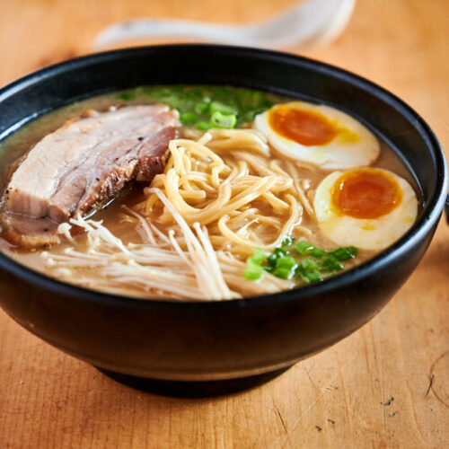

Ramen

This is ramen. or more specifically it's tonkotsu ramen. This dish originates from Japan
ramen often consists of:
- Noodles
- Egg
- Meat
- Vegetables (such as spring onion)
- Broth
- Cook the meat
- Add the meat
- 2 cups of Soy Sauce
- 1/2 cup of Water
- Grate the ginger
- Mince the garlic
- Cut the serrano pepper into small chunks
- Chop the onion
- Add all ingredients above in a pot
- Set the heat to low and let it sit for an hour
- Cook the soup
- Add 500ml Water to a pot
- Oil
- 1 green onion Chopped
- 1 cube of chicken bouillon
- Chili powder
- Mince the garlic
- Grate the ginger
- Cut the broccoli, cauliflower, lettuce
- Add salt and pepper
- Set the heat to low and let it sit for an hour
- Boil the egg
- Heat up water
- Once it's boiling add in the eggs and wait for 6-8 min
- Remove the eggs from the boiled water and submerge them in cold water
- Peel the eggs
- Cut them in half
- Make the ramen
- While the meat and soup is cooking, 10 minutes before they are done start making the ramen
- Add water and the instant ramen noodles in a pot
- Presentation
- Scoop the meat and sauce and place in a bowl
- Scoop the soup and place it on top of the meat and sauce
- Add the ramen and add the halved eggs on top of the ramen